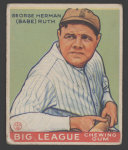
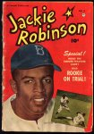
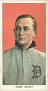
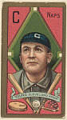

Players

Babe Ruth is the most well-known baseball player of all time. If you talk to someone who doesn't follow baseball, they will know who Babe Ruth is. The reason for this is that when he started playing the game, it was almost completely based on statistics; no one was really getting home runs, and the games were very low scoring. Generally, players would hit 10-15 home runs per season. But in 1919, Babe Ruth changed everything, and he hit 29 home runs. And just a year later, he hit 54 home runs. He revolutionized the game. He changed the way people played and thought of baseball. That’s not even counting the fact that he was also a pitcher, and a very good one at that.

Jackie Robinson is one of the most influential baseball players. Although he might not have had as many home runs as Babe Ruth did, he did something that has impacted everyone, and not just in the baseball world. He was the first African American Major League Baseball player and paved the way for so many others.

Ty Cobb has one of the best batting averages in baseball. He has held his second-place spot in the ranks since he stopped playing in 1928. He was playing during the dead-ball era of baseball, and for those who don’t know what that is, it is pretty much the time from when baseball started to when Babe Ruth came along. The focus was on getting on base, whether that be a base hit, bunting, or stealing. Ty never expected the home run to be a viable part of the game.

Cy Young is one of the best pitchers of all time. He had 511 wins and 749 complete games. For those who don’t know, a complete game is when a pitcher pitches all 9 innings without another replacing them. This is something that does not happen very often anymore. Cy Young was such a good pitcher that he has an award named after him. They give it out at the end of the year to the best pitcher from the American and National Leagues.